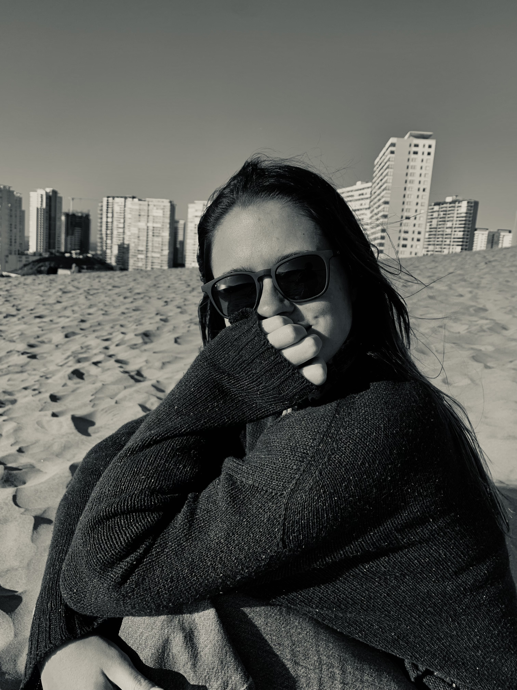

Periodista
Estudiante de periodismo Universidad Catolica
Email: msoublette@uc.cl
Teléfono: +56 9 6413 8872
Estudiante Colegio Los Alerces
Estudiante periodismo Universidad Católica.
Apoyo en época navideña. Atención al cliente, orden de la tienda.
Elaboración de notas periodísticas sobre el trabajo realizado dentro del instituto. Difusión en redes sociales. Organización de encuentros y seminarios públicos.